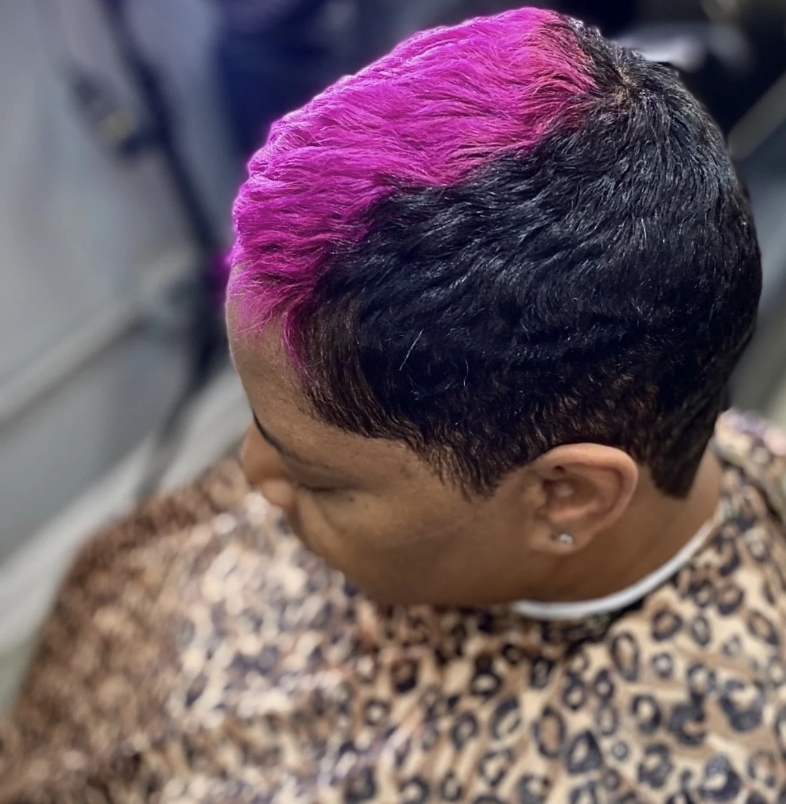
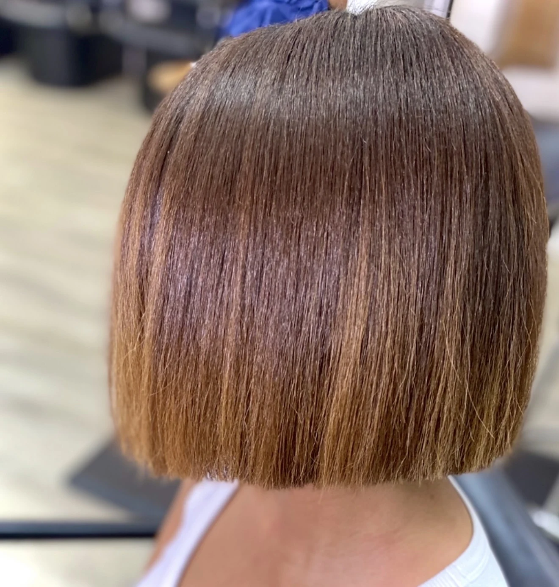
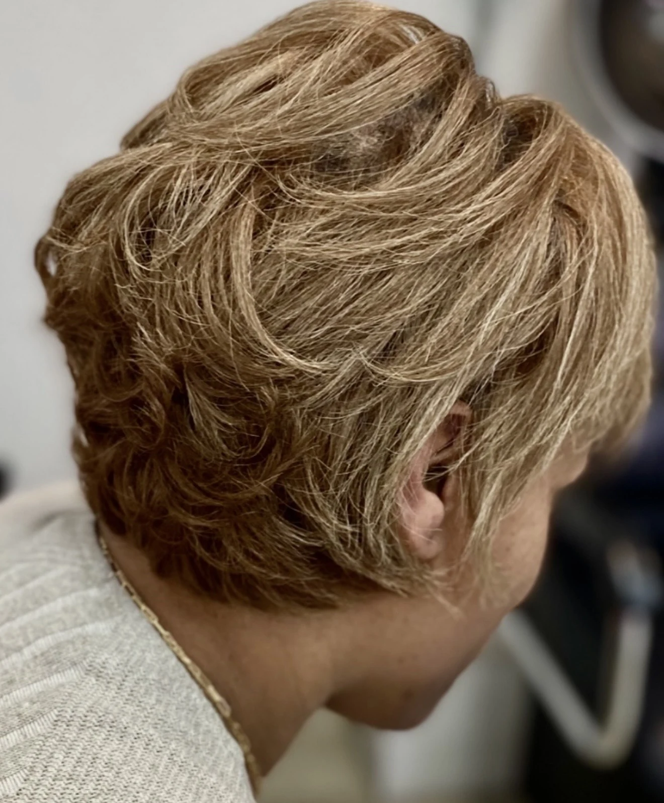
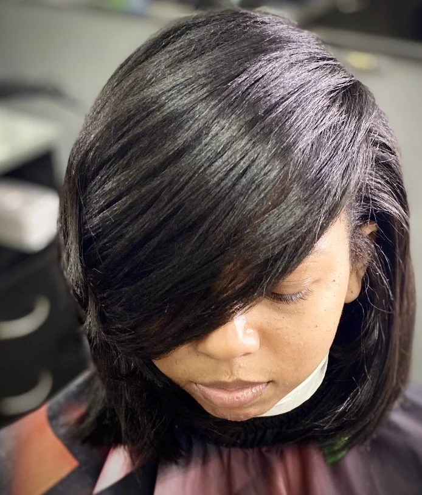
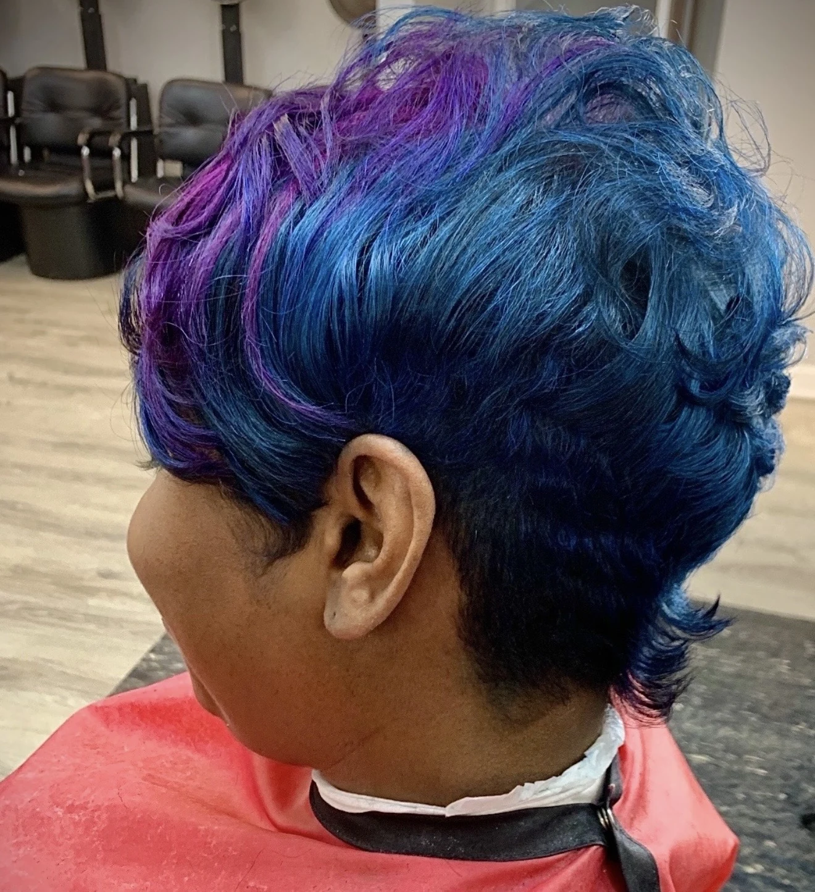
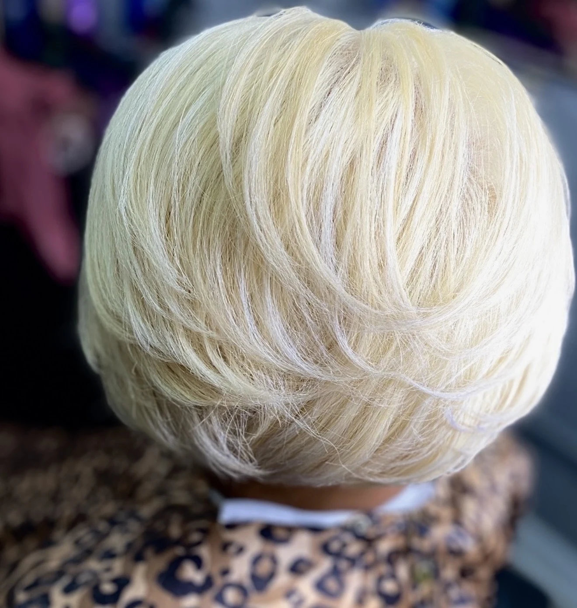
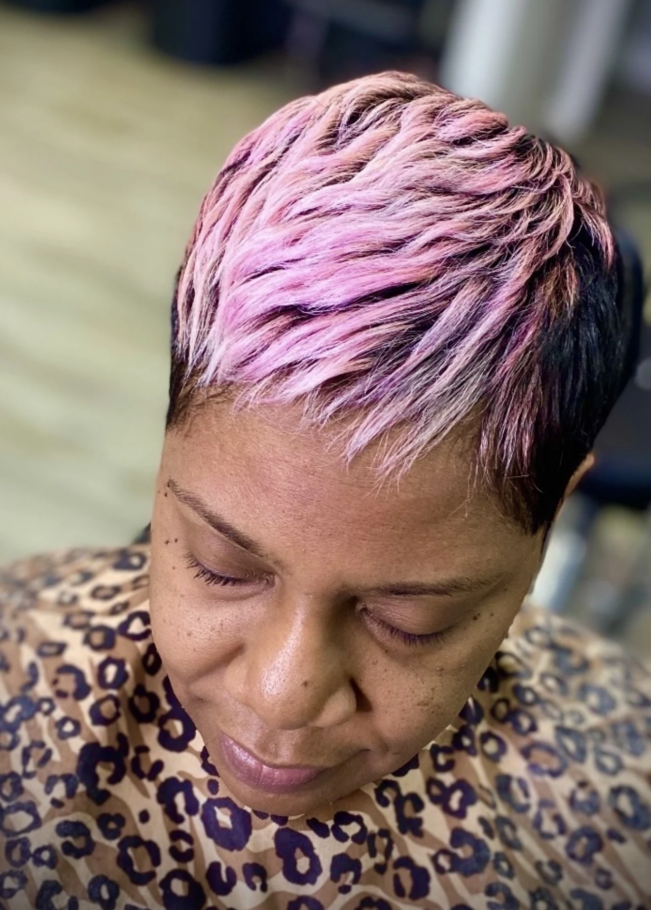

Signature Pixie Cut + Style
Precision shaping and detail work finished to complement your features.
Genetik Bleu Salon
Precision cuts, polished styling, healthy-hair care, and expressive color designed around the individual client.
Appointments are scheduled directly with the stylist. Services are not booked through this website. Please call during operating hours or message the stylist via the provided Instagram to schedule an appointment.
Cuts, Styling + Color

Precision shaping and detail work finished to complement your features.

Clean lines, balanced shape, and a smooth polished finish.
Defined curls, sculpting, and polished short-hair finishing.

Customized layering that builds movement, softness, and shape.
Shape and definition created around your natural texture and density.

A smooth, polished press with movement, shine, and a refined finish tailored to your hair.
Targeted new-growth color maintenance to refresh regrowth and keep your existing shade polished and consistent.

Statement shades and customized creative color placement.

Customized lightening for brighter blonde results and tone refinement.

Refresh faded color, roots, or existing creative tones between larger services.

Strategic lightening and toning for brightness, contrast, and dimensional movement.